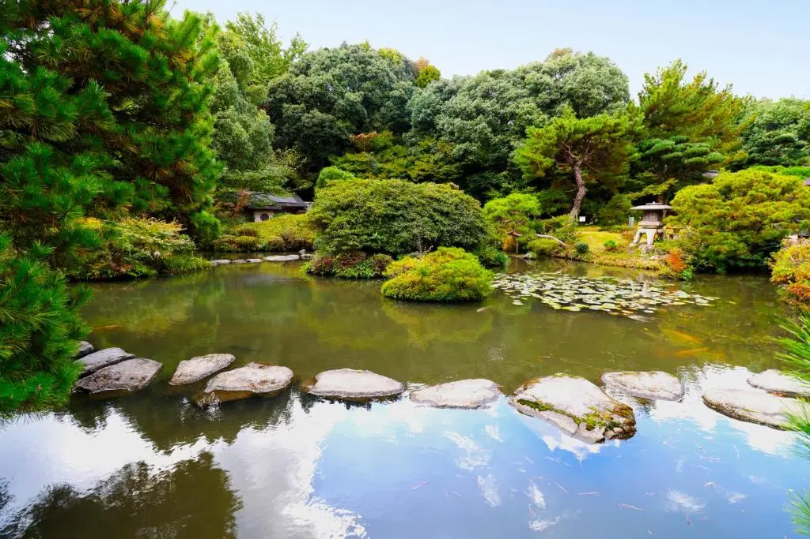
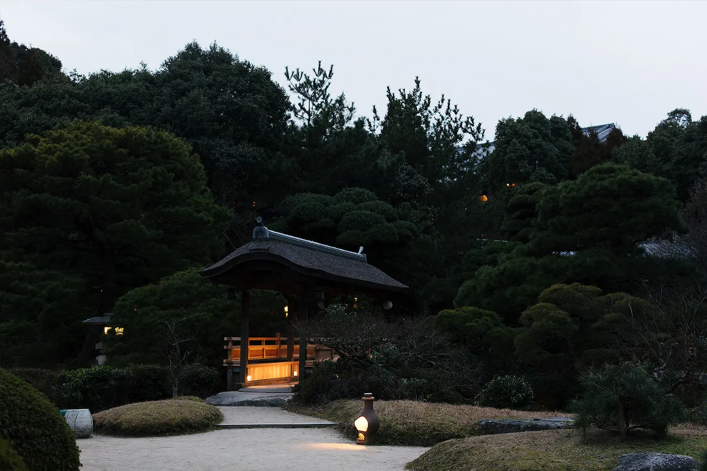
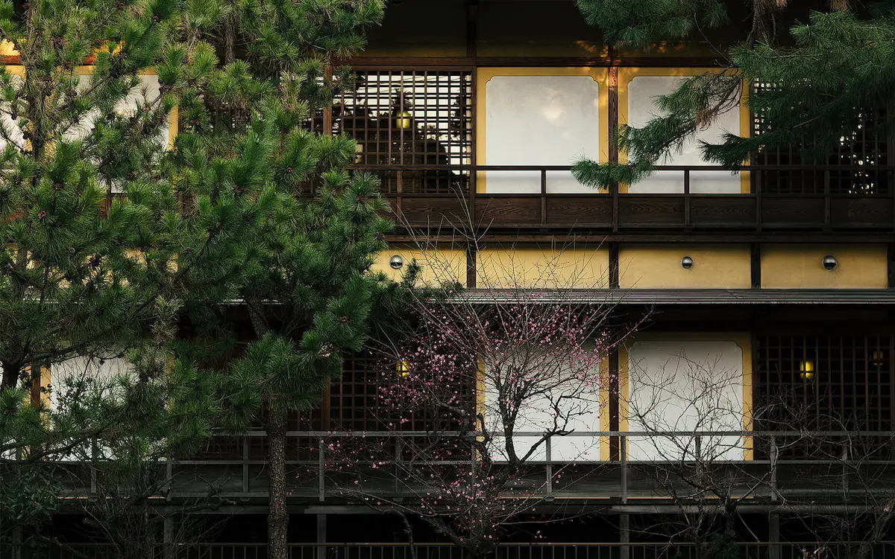
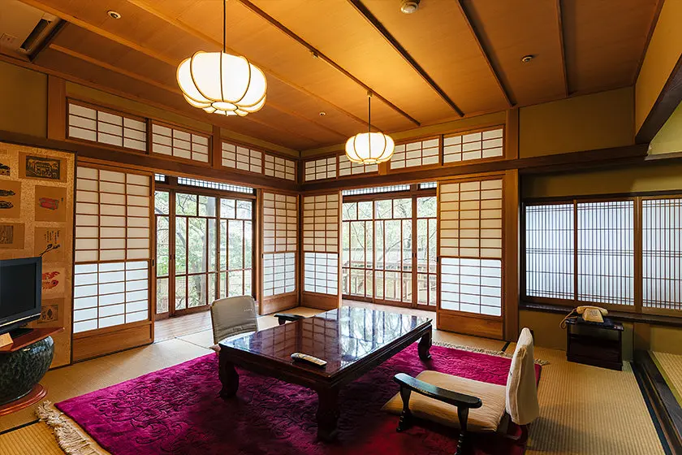
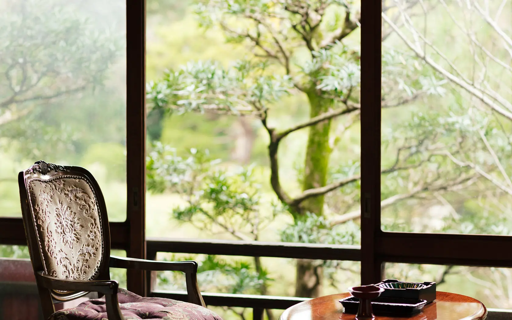
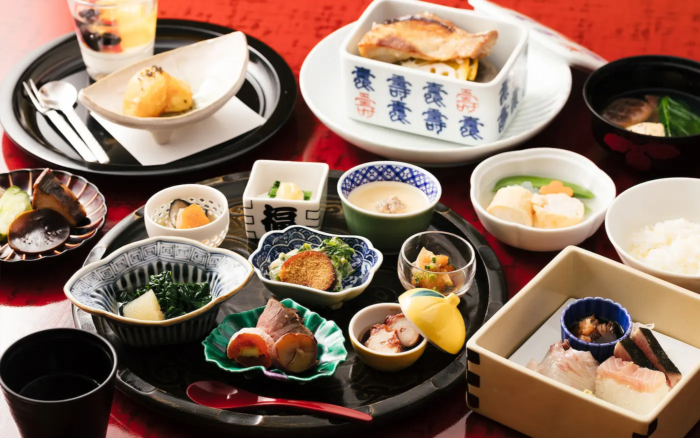
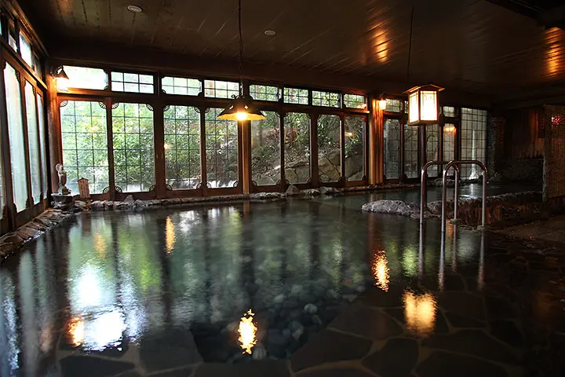
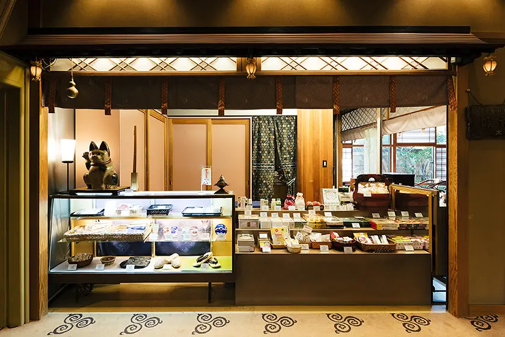

There is a particular moment that defines the Daimaru Besso experience, and it happens before you ever reach your room. You step through the entrance gate, and the garden opens in front of you — 6,500 tsubo of meticulously shaped Japanese landscape, where stone paths curve between pine and maple, where a koi pond reflects the seasonal sky, where the buildings arranged around the grounds carry inscriptions from three different eras of Japanese history. The spring water flowing beneath this place has been flowing since at least the 8th century. The Manyoshu — Japan's oldest anthology of poetry, compiled in the Nara period — mentions these very waters. You are not staying in a hotel. You are stepping into a thousand years of continuity.
History: 160 Years of Hospitality on Ancient Ground
Daimaru Besso was founded in 1865, the first year of the Keio era, making it the oldest and most established inn at Futsukaichi Onsen. From its earliest days, the ryokan held a distinction that few could claim: it was designated as the official lodging of Dazaifu Tenmangu, the great Shinto shrine dedicated to Sugawara no Michizane that draws millions of visitors each year from across Japan and the world. That designation was not merely ceremonial — it reflected the inn's reputation as a place where quality, discretion, and the standards of formal Japanese hospitality were beyond reproach.
The grounds expanded and the buildings accumulated over the following century. Taisho-tei, the oldest of the three main guest wings, was constructed in 1918 in the shoin-zukuri style of traditional Japanese wooden architecture — a building of such distinction that the Showa Emperor himself stayed there, alongside the then-Crown Prince who is now the reigning Emperor. Showa-tei followed in 1970, offering a more compact and retro atmosphere suited to individual travelers. Heian-tei, the newest of the three wings, was built in 1989 in the sukiya-zukuri style, introducing a refined elegance that complements the older buildings without competing with them. The private annex Rengyoan — the oldest structure on the property, transported from its original site and preserved with extraordinary care — completes the quartet. Each building carries a different era on its walls, and staying at Daimaru Besso means choosing which century suits you best.
The Onsen: 1,300 Years of Flowing Water
The Futsukaichi Onsen that flows beneath Daimaru Besso is classified as an alkaline simple hot spring — the water is soft and slightly alkaline, with a gentle sulfur undertone, and its effect on the skin is the kind that takes hold slowly over a long soak and is remembered for days afterward. The spring has been in continuous flow for more than 1,300 years, and its waters drew government officials, Buddhist monks, and Shinto priests during the classical period. The output at Daimaru Besso is recorded at 100 liters per minute from a free-flowing natural source — not recycled, not chemically adjusted, simply the earth giving what it has always given.

The main communal bath, Suita-no-yu, spans over 330 square meters per side — men's and women's baths each of this scale, lined with stones and crystals in a design that evokes a natural river basin. The windows open to the garden trees, and a reviewer describes it well: the scale and the greenery combine to make you forget, during the soak, that a city is twenty minutes away. Guests staying in the Taisho-tei wing — when it is open — have exclusive access to two private reserved baths: Suishin-no-yu and Ashi-no-yu, both available 24 hours. Every guest room across all wings includes a private in-room bath, though these are not fed by the onsen itself. For those with tattoos, the communal bath is restricted; the in-room bath remains available regardless.
Day-use guests may access the baths without staying overnight, through advance reservation. The communal bath hours run from 6:00 to 10:00 in the morning and 11:30 to 23:00 in the evening. The inn also offers day packages combining meals and bathing for visitors who wish to experience the onsen and kaiseki without committing to a full overnight stay — a policy consistent with the ryokan's historical function as the onsen destination of choice for Fukuoka day-trippers and pilgrims heading to Dazaifu.
Daimaru Besso and the Landscape of Dazaifu Pilgrimage
The positioning of Daimaru Besso within the cultural geography of northern Kyushu is not incidental. Dazaifu Tenmangu — the great shrine dedicated to Sugawara no Michizane, the deified scholar and poet — is 4.5 kilometers to the east and reachable by car in under ten minutes or by a combination of rail and walking. For centuries, pilgrims traveling from Hakata to pay respects at the shrine paused at Futsukaichi to bathe, rest, and eat — and Daimaru Besso, as the official designated lodging of the shrine itself, was the natural endpoint of that pause. The ryokan's founding in 1865 formalized a hospitality relationship that had existed informally for generations before it.
The surrounding area compounds the historical weight of a stay here. Buzoji Temple, which houses connections to the Tendai Buddhist tradition, is 500 meters away. Mount Tenpai — known in the Manyoshu under the same name — is visible from the garden. Kaidan-in Temple and Kanzeonji, both designated as national treasures and important cultural properties, are within a few kilometers. The Dazaifu government ruins, once the administrative heart of ancient Kyushu, are equally close. Guests who choose Daimaru Besso as a base for exploring this district will find that the ryokan's location is not merely convenient — it is historically implicated in everything worth seeing in the area.
The Rooms: Three Wings, Three Eras
Daimaru Besso offers 41 rooms distributed across four distinct buildings, each reflecting the architectural sensibilities of its period of construction. The rooms are Japanese-style throughout — tatami floors, futon bedding, sliding shoji screens, and the particular quality of light and silence that only this format produces. Every room across all wings includes a private in-room bath.

Taisho-tei, built in 1918, is the most architecturally significant of the three wings — a pure wooden shoin-zukuri structure, the only building offering rooms in eight distinct styles. Asagiri, Haisen, Shiun, Yukage, Tenpai, Kumoi, Kangetsu, Tokiwa, Matsukaze, and Kobai each carry their own proportions, their own views, their own atmosphere. Taisho-tei guests have exclusive access to the private Suishin-no-yu and Ashi-no-yu baths. At time of writing, Taisho-tei is temporarily closed; guests should confirm current availability before booking. Heian-tei, built in 1989, offers spacious rooms in the sukiya-zukuri style, each featuring two Japanese rooms and a living room — a generous configuration that changes its textile accents and fittings by season, making a repeat stay in the same room a different experience depending on when you arrive. Showa-tei, built in 1970, provides more compact rooms with a characteristic country-style sunken table — the recommended choice for solo travelers and for guests who find the retro atmosphere of the mid-Showa period more congenial than the formal elegance of the older wings. The Rengyoan private annex — the oldest structure on the grounds — offers the most complete seclusion on the property, with its own distinct scale and the particular quietness that comes from a building that has been standing far longer than any of the others.
In-room amenities across all wings include a flat-screen TV, refrigerator, yukata robes, Japanese sweets on arrival, and green tea. Complimentary coffee is available in the lobby lounge from 7:00 to 22:00. The property provides free parking for up to 60 vehicles — a practical detail that distinguishes this ryokan from city-center properties and correctly anticipates that many guests will arrive by car, having come from Fukuoka Airport or from the Chikushino IC on the expressway.
General Facilities
Beyond the onsen and garden, Daimaru Besso maintains a set of facilities consistent with its role as a full-service destination ryokan. The Ginnotsubo Japanese Restaurant serves as the dedicated dining venue for kaiseki and seasonal cuisine, available for non-staying guests by advance reservation. Tsukinoniwa Beauty Salon offers treatments and beauty services during the stay — an amenity consistent with the ryokan's positioning as a restorative retreat rather than merely a place to sleep. Private dining rooms are available for in-room meal service at an additional charge of ¥3,300 per person, with the choice of sunken or chair seating. Banquet halls and meeting rooms accommodate weddings, engagement ceremonies, and formal events — the ryokan has a long tradition of hosting these occasions within a setting whose historical gravity gives them a different weight than a convention hotel would provide.
The grounds include a traditional stroll garden designed for walking through the seasons — cherry blossoms in spring, deep greens in summer, maples in autumn, the stark structure of stone and pine in winter. A garden lounge offers post-bath coffee and light drinks in a space that opens to the garden. Wi-Fi is available throughout the property, though as one reviewer noted, signal strength varied by room — a limitation worth noting for guests who plan to work during the stay. Wheelchairs are available for borrowing, and while the building layout is not fully universal-design, staff can arrange appropriate accommodations when informed in advance.
Cuisine: Kaiseki Across the Seasons
Daimaru Besso's cuisine is structured around two meals — a kaiseki dinner served in the evening and a traditional Japanese breakfast in the morning — both built from the principle that seasonal ingredients, sourced locally where possible, and prepared with careful technique are sufficient to produce something exceptional. The kitchen updates its menus monthly, developing new dishes in response to what is available and what the season calls for, which means that a guest who returns in a different month will encounter a different table entirely.
Dinner is a multi-course kaiseki meal: visually plated, paced correctly, and served in a private dining room for those who prefer to eat without the company of other guests. The private room option — available in both sunken and chair-seating configurations — is the format the ryokan recommends for couples and families, and it is the choice that most closely matches what a kaiseki experience at this level of property is supposed to feel like. Breakfast is anchored by two signature items: the dashi maki tamago, a rolled omelet made with the delicate precision that only constant repetition produces, and homemade hot spring tofu — silken tofu set in the onsen water, with a texture that cannot be replicated in ordinary water. Six rotating side dishes, vegetable-forward and focused on healthy preparation, complete the morning table. Breakfast is served between 07:00 and 08:00 with a preferred time collected at check-in.
Cleanliness
Cleanliness at Daimaru Besso is the quiet, exacting kind that traditional ryokan culture enforces as a matter of institutional pride rather than regulatory compliance. Reviewers across booking platforms consistently describe rooms as immaculate, the tatami as fresh-smelling, and the onsen facilities as maintained to a standard that the age of the buildings makes genuinely impressive. The wooden structures of Taisho-tei and Rengyoan — buildings approaching or exceeding a century in age — require ongoing care that is visible in their condition: clean without being sterile, worn in the ways that old wood naturally wears, but not neglected. The stone-lined onsen baths are cleaned and water is changed on a scheduled basis. The property operates housekeeping in the traditional ryokan manner, with thorough daily servicing of tatami rooms. Several Google Maps reviewers specifically cite the cleanliness of the baths and the grounds as standout positives, and the Booking.com rating of 9 by recent guests reflects a property that maintains its standards consistently.

Value
Daimaru Besso is a premium ryokan, and it prices accordingly. Rates typically run from approximately ¥30,000 per person per night when meals are included — the standard ryokan pricing model — with the figure varying by room type, season, and meal plan selected. Solo travelers should note that most plans are priced per person with a two-person room rate applying regardless of occupancy, a common ryokan convention that makes single travel more expensive here than at business hotels. The value question at this price level is whether the totality of the experience — the 1,300-year-old onsen, the traditional architecture, the seasonal kaiseki, the garden, the historical location — justifies the cost. For travelers specifically seeking a traditional ryokan experience in Fukuoka Prefecture, the answer is yes, and it is difficult to identify a comparable property in this region. For travelers whose priority is room size, convenience to Fukuoka's commercial center, or contemporary amenities, there are better-matched options in the city itself.
The day-use packages offer a meaningful alternative for visitors who cannot commit to a full overnight stay: a combination of kaiseki dining and onsen access, bookable in advance, that delivers the core of the experience at a significantly lower price point. For travelers passing through Fukuoka with a half-day free and an interest in understanding what a traditional onsen ryokan actually is, the day-use option at Daimaru Besso is one of the most efficient ways to spend that time anywhere in Kyushu.
Practical Information
- Check-in: 15:00 Check-out: 10:00
- Price Range: Approx. ¥30,000+ per person per night (meals included); rates vary by wing, season, and plan
- Rooms: 41 rooms across four buildings — Taisho-tei (8 room types, currently closed), Heian-tei (two Japanese rooms + living room), Showa-tei (compact, recommended for solo travelers), Rengyoan (private annex, oldest building); all Japanese-style tatami rooms with private in-room bath
- Onsen: Futsukaichi Onsen — alkaline simple hot spring, 1,300+ year history, free-flowing source at 100 liters/minute; communal bath Suita-no-yu (330㎡+); private baths Suishin-no-yu & Ashi-no-yu (Taisho-tei guests only, 24hr); in-room bath in all rooms (not onsen water)
- Communal Bath Hours: 6:00–10:00 and 11:30–23:00 daily; tattoo restriction applies to communal bath
- Cuisine: Kaiseki dinner (multi-course, monthly seasonal menu) + traditional Japanese breakfast (dashi maki tamago, hot spring tofu, 6 rotating side dishes); private dining rooms available (sunken or chair); in-room dining +¥3,300/person
- Facilities: Ginnotsubo Japanese Restaurant, Tsukinoniwa Beauty Salon, traditional stroll garden, lobby lounge (complimentary coffee 7:00–22:00), banquet/meeting rooms, garden courtyard
- Parking: Free, up to 60 vehicles on-site
- Wi-Fi: Available throughout property (signal may vary by room)
- Children: All ages welcome; check meal plan terms for child rates
- Wheelchair/Accessibility: Elevators available; wheelchairs for borrowing; notify staff in advance for arrangements
- Tattoo policy: Communal bath restricted; in-room bath accessible regardless
- Day use: Available by advance reservation — includes meal and onsen access
- Official Website: daimarubesso.com/en/
- Nearest Station: Futsukaichi Station (JR Kagoshima Line) — approx. 15 min walk or 5 min by taxi
Getting There
From Fukuoka Airport (FUK)
- Highway bus to Chikushino stop: ~25 min, then 5 min walk
- Alternatively: taxi from airport ~35 min, approx. ¥5,000
- Bus is infrequent — check schedule in advance
- Free on-site parking (60 spaces) makes driving a practical option
From Hakata Station (JR / Shinkansen)
- JR Kagoshima Line Rapid to Futsukaichi Station: ~15–20 min
- From Futsukaichi Station: 15 min walk or 5 min taxi (~¥900)
- Taxis may not be available late at night — plan accordingly
- Train is the recommended approach from central Fukuoka
By Car
- From Fukuoka City center: approx. 30 min via Route 3 or Kyushu Expressway
- Exit Chikushino IC — approx. 5 min to ryokan
- Free on-site parking for up to 60 vehicles
- GPS address: 1-20-1 Yumachi, Chikushino-shi, Fukuoka
Day Trip from Dazaifu
- Dazaifu Tenmangu to Daimaru Besso: ~10 min by car
- Ideal pairing: shrine visit in the morning, onsen and kaiseki at the ryokan
- Day-use packages available with advance reservation
- Nishitetsu Dazaifu Line + taxi is the transit option
Tips for Getting the Most Out of Your Stay
Book the communal onsen bath early in the morning — the 6:00 to 10:00 morning window, before the afternoon crowds arrive, is the time the bath is at its quietest and the light through the garden windows is at its most atmospheric. The bath scale at Suita-no-yu is large enough that even on busy evenings it does not feel crowded, but the morning soak has a quality of solitude that makes it worth setting an alarm for.
Reserve your preferred dinner time and private dining room configuration at check-in. The kaiseki menu changes monthly, so if you are planning a return visit in a different season, the table will be a different experience regardless of which room you stay in — a point worth communicating to the front desk, as returning guests are often given small attentions that recognize the repetition. Request the preferred breakfast time at the same moment: the 07:00 slot allows an early start to the day if you plan to visit Dazaifu Tenmangu or the surrounding historical sites before the tourist coaches arrive.
Spend time in the garden at dusk before dinner. The light in a traditional Japanese garden in the last hour before dark is specific to that environment and that hour, and the buildings around the perimeter take on a different quality when the interiors are lit from within and the paths are quiet. This is a property worth walking around slowly, not merely sleeping in.
If you are driving, use the free on-site parking confidently — 60 spaces for a 41-room ryokan is a generous ratio, and arrival by car removes the taxi variable from late-evening return trips to the property after a day in Fukuoka or Dazaifu. The Chikushino IC is close enough that the expressway is a practical option for guests coming from elsewhere in Kyushu.
Beyond the Garden: An Honest Assessment
Daimaru Besso is not trying to be a contemporary boutique hotel, and it does not need to be. It is trying to be the best traditional ryokan within reach of Fukuoka — and it succeeds at this with a quietness and self-assurance that comes from 160 years of doing the same thing well. The onsen is real: a free-flowing alkaline spring with a documented history stretching to the 8th century, maintained in a bath of a scale that few properties anywhere can match. The kaiseki is real: monthly menus, local ingredients, private dining rooms, and the kind of morning breakfast that makes you understand why Japanese inn culture treats the meal as a ritual rather than a refueling stop. The garden is real: 6,500 tsubo of maintained landscape built to be walked through in every season, surrounding buildings that are themselves historical artifacts.
What you are trading for this is the distance from Fukuoka's urban center, the absence of the modern-hotel convenience infrastructure, and a price level that reflects the cost of maintaining very old wooden buildings to a standard that allows guests to stay in them without awareness of the labor involved. Taisho-tei's current closure limits one of the property's most distinctive offerings; check its status before booking if the imperial-era architecture is your primary reason for coming. For the traveler who has been looking for an authentic traditional ryokan experience within easy reach of Fukuoka City — with an onsen that carries genuine historical weight, a kaiseki kitchen that changes with the seasons, and grounds that feel removed from the present century — Daimaru Besso is the answer, and there is nothing quite like it in this part of Japan.
Hotel Directory
Daimaru Besso (大丸別荘) — Futsukaichi Onsen
Photo Gallery

Photo 1
Photo 2
Photo 3'">
Photo 4'">
Photo 5'">
Photo 6'">The Garden, the Onsen, the Kaiseki — Waiting for You
Rooms at this historic ryokan are limited to 41. Book well in advance for peak seasons.